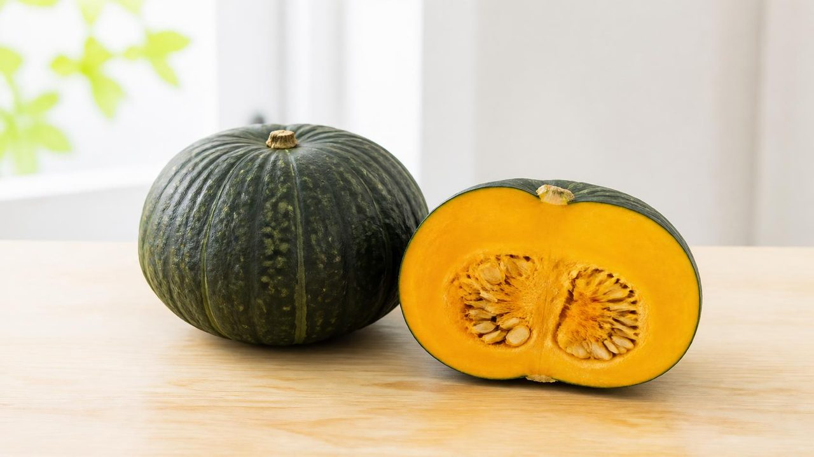
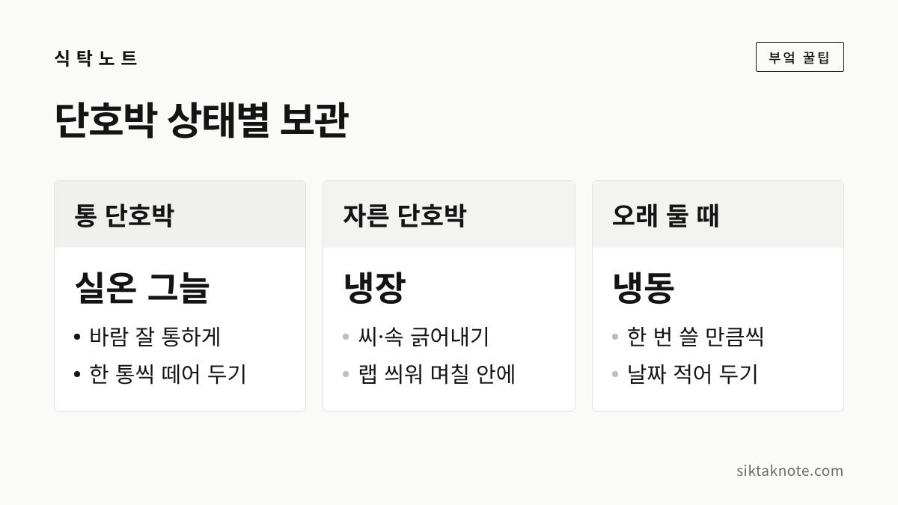
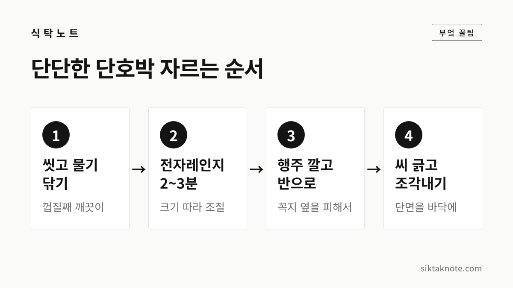

단호박 보관법 — 통째 실온 후숙, 자른 단호박 냉장·냉동과 쉽게 자르는 법

3줄 요약
- 통 단호박은 바람이 잘 통하는 서늘한 그늘에 두면 됩니다. 수확 뒤 시간이 지나면 전분이 당으로 바뀌어 단맛이 오른다고 알려져 있어요.
- 칼을 댄 단호박은 씨와 속을 긁어내고 랩으로 감싸 냉장하고, 며칠 안에 드시는 게 좋습니다.
- 껍질이 너무 단단하면 전자레인지에 2~3분쯤 살짝 데운 뒤 자르면 칼이 한결 잘 들어가요.

단호박은 껍질이 단단해서 아무 데나 둬도 괜찮을 것 같은데요. 실제로는 어디에 두느냐에 따라 단맛도, 버티는 기간도 꽤 달라집니다. 통째로 둘 때와 칼을 댄 뒤의 보관법이 다르다는 것만 기억하셔도 절반은 성공이에요.
통 단호박은 서늘한 그늘에 둡니다
자르지 않은 단호박은 냉장고보다 실온이 잘 맞아요. 햇볕이 직접 들지 않고 바람이 잘 통하는 서늘한 곳이 좋습니다. 미국 아이오와주립대 원예 자료에서는 겨울호박류를 서늘하고 건조하며 통풍이 잘되는 곳, 섭씨 10~13도 안팎에서 보관하라고 안내하고 있어요.
가정에서는 뒷베란다나 다용도실처럼 서늘한 곳이 이 조건에 가깝습니다. 다만 한겨울 베란다처럼 너무 추운 곳은 피하시는 게 좋겠습니다.
- 흙이 묻어 있으면 마른 행주로 털어 내요. 물로 씻는 건 먹기 직전에 합니다.
- 여러 통이라면 겹쳐 쌓지 말고, 서로 닿지 않게 한 통씩 떼어 둡니다.
- 바닥에 신문지를 한 장 깔아 두면 습기가 차는 걸 줄일 수 있어요.
껍질에 물기가 남아 있으면 그 자리부터 곰팡이가 피기 쉽거든요. 그래서 씻어서 보관하는 건 권하지 않습니다.

사 온 날 바로 찌지 않아도 되는 이유
단호박은 수확한 뒤에도 속에서 변화가 이어지는데요. 시간이 지나면서 전분이 당으로 바뀌어 단맛이 깊어진다고 알려져 있습니다. 이 과정을 흔히 후숙이라고 불러요.
제주특별자치도농업기술원 서부농업기술센터 안내에 따르면, 농가에서는 수확한 단호박을 그늘지고 통풍이 잘되는 곳에서 20~30도 정도로 2주쯤 후숙한다고 합니다. 이렇게 하면 당도가 오르고, 저장 기간도 길어지고, 썩는 비율도 줄어든다고 해요.
시장에서 산 단호박은 이미 후숙을 거친 것도 많아서, 집에서 꼭 2주를 기다릴 필요는 없습니다. 다만 막 따 왔다며 받은 단호박이라면 며칠 서늘한 그늘에 두었다가 드셔 보세요. 같은 단호박이라도 맛이 달라졌다고 느끼실 수 있어요.

사과·바나나 옆은 피해 주세요
익어 가는 과일은 에틸렌이라는 가스를 내는데요. 아이오와주립대 자료에서도 겨울호박을 익어 가는 과일 곁에 두면 보관 기간이 짧아진다고 나와 있습니다. 사과나 바나나를 담아 둔 바구니 옆에는 단호박을 두지 마세요. 사과를 따로 두는 요령은 사과 오래 보관하는 법에 적어 두었습니다.

칼을 댄 단호박은 냉장고로
한 번 자른 단호박은 실온에 두지 않는 게 좋습니다. 단면으로 수분이 빠지고, 씨 주변의 속부터 금방 물러지거든요.
- 숟가락으로 씨와 섬유질 속을 깨끗이 긁어내요.
- 단면이 마르지 않게 랩으로 꼭 감쌉니다.
- 냉장고에 넣고 며칠 안에 드세요.
단면이 하얗게 마르거나 끈적해지기 시작했다면 오래된 신호예요. 그 전에 쓰거나, 쓸 계획이 없다면 바로 냉동하시는 게 좋습니다.

오래 두려면 냉동합니다
다 먹지 못할 것 같다면 처음부터 나눠서 얼려 두면 편한데요. 생으로 얼려도 되고, 쪄서 얼려도 됩니다.
- 생으로 얼릴 때: 씨를 긁어내고 한입 크기로 썰어서, 물기를 닦은 뒤 지퍼백에 펼쳐 담아요.
- 쪄서 얼릴 때: 찐 단호박을 완전히 식힌 뒤 덩어리째 또는 으깨서 한 번 쓸 만큼씩 나눠 담습니다.
봉지에는 날짜를 적어 두세요. 얼린 단호박은 해동하면 물러지기 쉬워서 찜보다는 죽, 수프, 전처럼 익혀 먹는 요리에 바로 넣는 게 잘 어울립니다.

단단한 껍질, 덜 위험하게 자르는 법

단호박 손질이 겁나는 건 칼이 껍질에 박혀서 잘 안 빠질 때죠. 힘으로 누르다 보면 칼이 미끄러질 수 있으니 순서를 지키는 게 안전합니다.
- 살짝 데우기: 껍질째 씻어 물기를 닦고, 통째로 전자레인지에 2~3분쯤 데우면 껍질이 칼이 들어갈 만큼 부드러워진다고 알려져 있어요. 크기와 전자레인지 출력에 따라 시간은 조금씩 다릅니다.
- 식혀서 잡기: 꺼낸 직후에는 아주 뜨거우니 마른 행주나 장갑을 쓰세요. 김이 조금 빠진 뒤에 맨손으로 잡는 게 좋습니다.
- 도마 고정: 도마 밑에 젖은 행주를 깔면 도마가 밀리지 않아요.
- 반으로 가르기: 단단한 꼭지 부분은 피하고, 꼭지 옆에 칼끝을 넣어 반으로 갈라 줍니다.
- 단면을 바닥에: 반으로 가른 뒤에는 단면을 도마에 엎어 놓고 썰어야 덜 구릅니다.
목적은 껍질만 부드럽게 하는 것이라 속까지 익힐 필요는 없습니다. 오래 돌리면 속이 익어서 모양 내어 썰기가 오히려 어려워져요.
맛있는 단호박 고르는 법
통 단호박을 고를 때는 꼭지부터 보세요. 농업기술원 안내에서는 꼭지 전체가 코르크처럼 마르고 갈색으로 변해 세로로 갈라질 때를 다 익은 수확 시기로 봅니다. 꼭지가 바싹 마른 것이 잘 익은 단호박이라는 뜻이죠.
- 꼭지가 마르고 단단하게 붙어 있는 것
- 크기에 비해 들었을 때 묵직한 것
- 껍질에 무른 곳이나 깊은 흠집이 없는 것
자른 단호박을 살 때는 속살 색이 진한 주황빛이고 씨가 통통하게 차 있는 것이 잘 익은 편이라고 합니다. 단면이 하얗게 말라 있다면 자른 지 오래됐을 수 있어요.
이런 단호박은 버립니다
껍질 일부가 물렁하게 꺼졌거나, 곰팡이가 폈거나, 시큼한 냄새가 난다면 아깝더라도 버리시는 게 안전합니다. 자른 단호박의 단면에 미끈거리는 진액이 생긴 경우도 마찬가지예요.
가을 고구마도 비슷하게 실온의 적당한 온도가 중요한 식재료인데요. 고구마 보관법도 함께 보시면 도움이 될 것 같습니다. 포슬포슬한 단호박, 끝까지 달게 드세요.